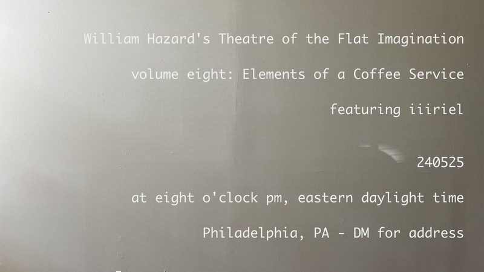

Theatre of the Flat Imagination, volume eight: Elements of a Coffee Service† will occur at eight o'clock pm, eastern daylight time, on May 25th, 2024 and will feature performances by iiiriel & me. If you'd like to attend this event, please get in touch with me by email, and I'll send you the address.
†Elements of a Coffee Service is the title of a book by Robert Glück, originally published in 1982, by Four Seasons Foundation
williamthazard [at] pm.me